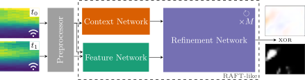
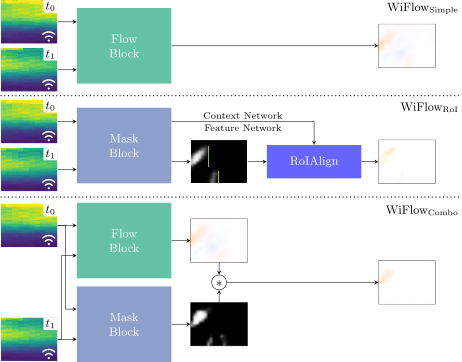
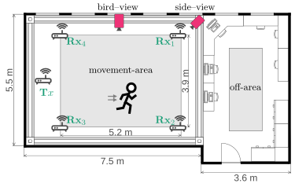
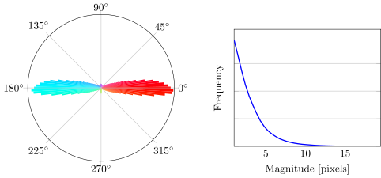
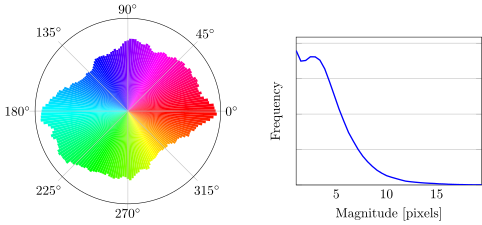
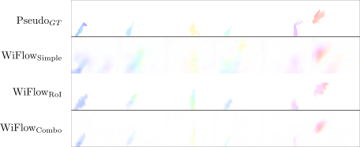

Knowing where and how fast objects are moving within a scene is important across various domains. Usually, cameras are used to capture the data necessary for this task, but adding cameras often raises privacy concerns, and the quality of captured frames is heavily influenced by lighting conditions. In this work, we explore using WiFi channel state information (CSI) instead of camera frames for optical flow estimation. We propose WiFlow, a CSI-based flow estimator, a preprocessor evaluation for CSI, and three model architectures that offer different trade-offs between accuracy and complexity. Further, we create the first dataset for training and evaluating CSI-based optical flow estimators, and our experiments provide insights into key design elements for this task. Code and data are available at https://visinf.github.io/wiflow.
WiFlow maps WiFi CSI sequences to 2D optical flow fields. Raw CSI consists of complex-valued measurements across antennas, subcarriers, and time snapshots. We apply a CSI preprocessor to obtain a suitable representation and feed it into a RAFT-inspired architecture.

Fig. 1 — WiFlow block. CSI data is preprocessed and processed by a RAFT-like architecture to predict optical flow or a motion mask.
We propose three architectures with varying complexity, all built on the WiFlow block:

Fig. 2 — Architectures. WiFlowSimple uses a single flow block. WiFlowRoI adds bounding box-guided flow prediction. WiFlowCombo combines flow and mask branches in parallel.
Due to the static camera, most pixels exhibit zero flow. We prevent collapse to the trivial all-zero prediction by up-weighting errors on non-zero flow pixels using a modified sequence loss:
The 4th power loss amplifies penalization of absent but expected motion, working in concert with our separate moving-pixel evaluation metric EPEM.
We collect the first dataset designed for CSI-based optical flow estimation. Existing CSI datasets lack synchronized video or multi-antenna, multi-device measurements at the resolution needed for this task. Our dataset fills this gap.

Fig. 3 — Capture setup. 1 transmitter, 4 receivers (Rx1–Rx4), and 2 cameras in a 5.2 m × 5.5 m movement area.
sideview
Side-view camera
K = 10 CSI per frame
6 Hz image frame rate
birdview
Ceiling camera
K = 10 CSI per frame
10 Hz image frame rate
birdview+
Ceiling camera
K = 100 CSI per frame
10 Hz image frame rate

sideview — predominantly horizontal motion.

birdview — more uniform angular distribution, larger magnitudes.
Fig. 4 — Motion distributions.
Optical flow labels are produced by an ensemble of state-of-the-art flow estimators (rpknet, MS-RAFT+, SEA-RAFT, MemFlow, DPFlow) applied to subsampled video frames at 168×128 px. Predictions are averaged and motions below 0.5 px magnitude are thresholded to zero to minimize background noise.
Because the static camera makes the overall EPE trivially minimizable by predicting zero flow, we report three complementary metrics:
EPEM
EPE on moving pixels only
(PseudoGT norm > 0.5)
EPES
EPE on static pixels
(background accuracy)
EPEA
All pixels, error amplified ×4
(penalizes missing motion)
We evaluate five preprocessing strategies. The Quotient preprocessor — which normalizes per-antenna measurements by a reference antenna to cancel shared phase offsets — achieves the lowest EPEM and EPEA, and is used in all subsequent experiments. The gap between Raw and Quotient confirms that preprocessing is essential before feeding CSI to a neural network.
| Perspective | Architecture | Subject Split | Time Split | ||||
|---|---|---|---|---|---|---|---|
| EPE ↓ | EPEM ↓ | EPES ↓ | EPE ↓ | EPEM ↓ | EPES ↓ | ||
| sideview | WiFlowSimple | 0.51 | 2.22 | 0.40 | 0.53 | 2.07 | 0.43 |
| WiFlowRoI | 0.18 | 2.36 | 0.04 | 0.16 | 2.21 | 0.04 | |
| WiFlowCombo | 0.16 | 2.36 | 0.02 | 0.15 | 2.18 | 0.03 | |
| birdview | WiFlowSimple | 0.55 | 3.53 | 0.40 | 0.56 | 3.24 | 0.43 |
| WiFlowRoI | 0.21 | 3.73 | 0.05 | 0.20 | 3.40 | 0.04 | |
| WiFlowCombo | 0.19 | 3.71 | 0.03 | 0.18 | 3.38 | 0.03 | |
| birdview+ | WiFlowSimple | 0.45 | 3.24 | 0.32 | 0.41 | 2.89 | 0.29 |
| WiFlowRoI | 0.21 | 3.41 | 0.05 | 0.19 | 3.13 | 0.05 | |
| WiFlowCombo | 0.18 | 3.50 | 0.02 | 0.17 | 3.13 | 0.02 | |
EPE (↓) metrics on each evaluation setting. WiFlowCombo achieves the best overall accuracy; results are consistent across subject and time splits, confirming cross-subject generalization.
| Architecture | Time (ms) | FLOPs (×109) | Memory (MB) |
|---|---|---|---|
| WiFlowSimple | 23 | 22 | 380 |
| WiFlowRoI | 26 | 22 | 380 |
| WiFlowCombo | 47 | 43 | 763 |
Inference on a single NVIDIA RTX 6000 Ada GPU, averaged over 1000 runs on birdview+. All models fit comfortably within 1 GB VRAM.
The figure below compares all three architectures against the pseudo ground truth on birdview+ (time split). WiFlowSimple predicts spurious motion in the static background, while WiFlowRoI and WiFlowCombo produce clean, spatially localized flow fields.

Fig. 5 — Qualitative results on birdview+ (time split). Top rows: single person. Bottom rows: two people moving simultaneously.
@inproceedings{Weigel:2026:wiflow,
title = {WiFlow: Estimating Optical Flow using WiFi Channel State Information},
author = {Thomas Weigel and Simon Kiefhaber and Fabian Portner
and Matthias Hollick and Simone Schaub-Meyer},
booktitle = {Proceedings of the European Conference on Computer Vision (ECCV)},
year = {2026}
}We would like to thank G. Matthes for his technical support during data capture and M. Schulz et al. for publishing the Nexmon firmware, which enabled us to capture CSI from consumer devices.
Calculations for this research were conducted on the Lichtenberg high-performance computer of TU Darmstadt. SK has been funded by the Deutsche Forschungsgemeinschaft (DFG) under Germany's Excellence Strategy – EXC-3057. FP has been funded by the European Union's Horizon programme under MSCA-DN-6th Sense (Grant Agreement No. 101119652). MH was supported by the State of Hesse through LOEWE emergenCITY (Grant no. LOEWE/1/12/519/03/05.001(0016)/72). SSM has been funded by the DFG – project No. 529680848.